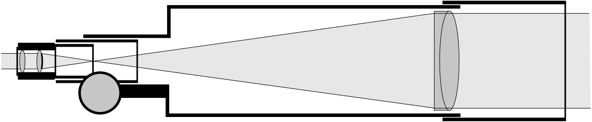
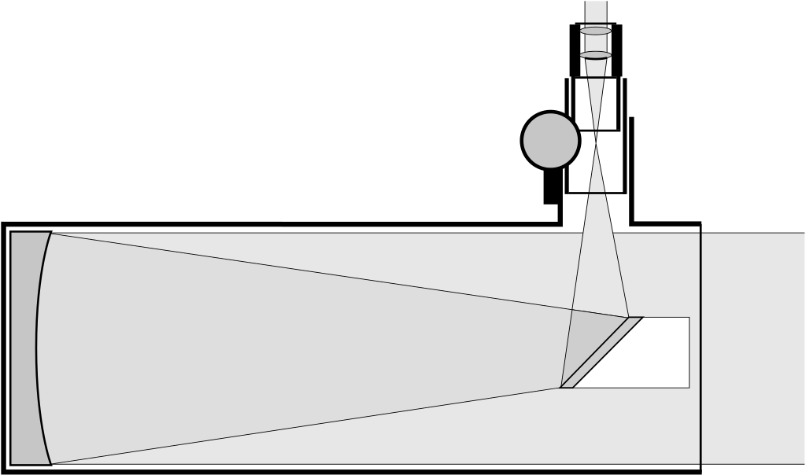
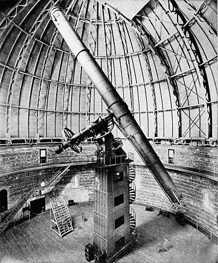
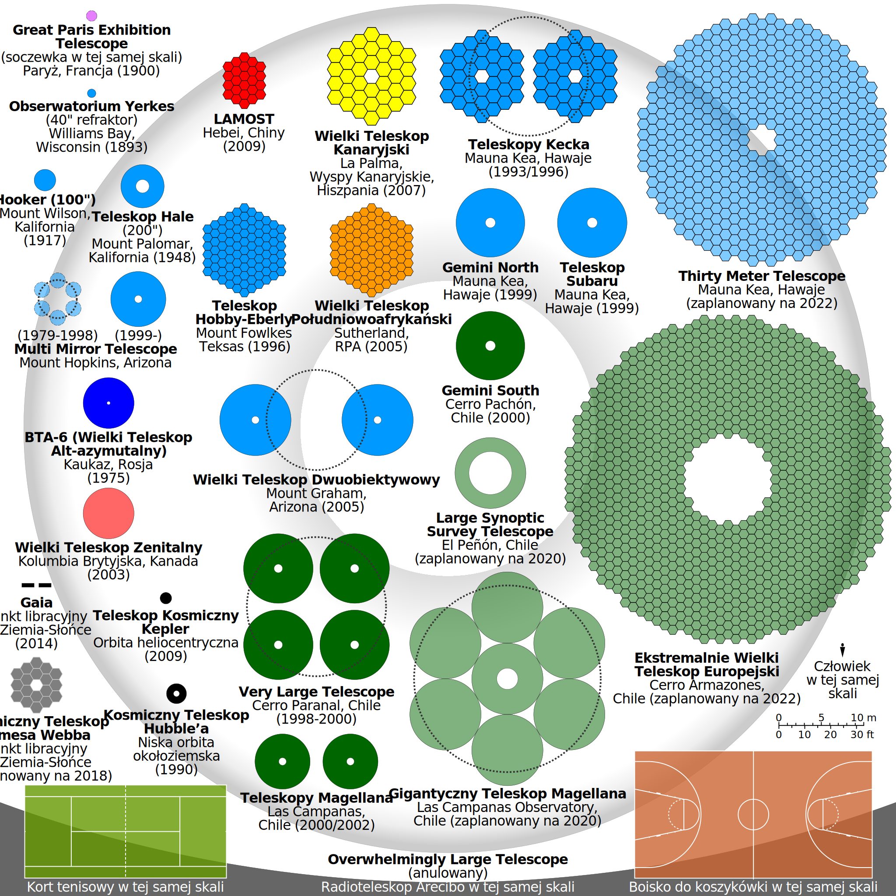
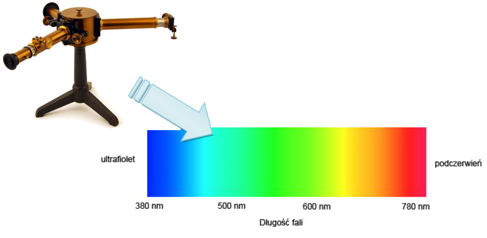
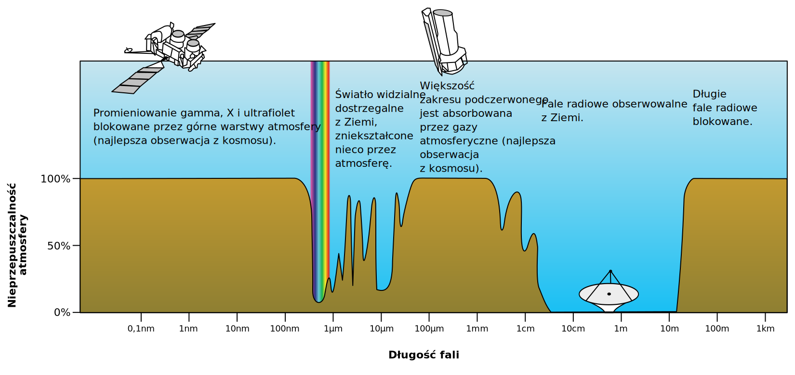
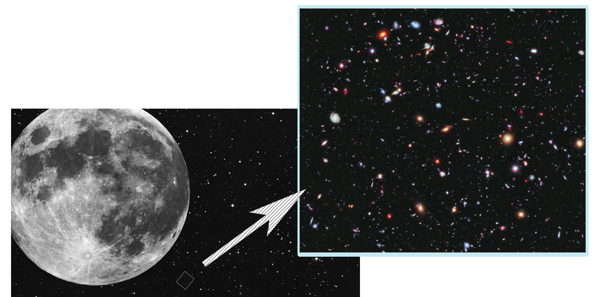
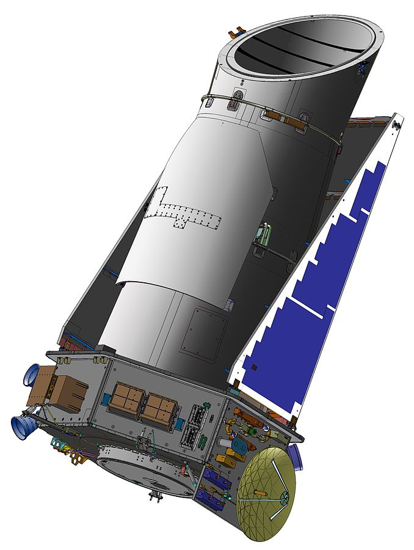

Zajmijmy się najpierw tymi klasycznymi, choć jak się za chwilę okaże, obecnie wcale nie banalnymi odmianami teleskopu - odbierającymi światło widzialne. Wiemy już, że z takowego korzystał Galileusz. Dzięki teleskopom optycznym możemy otrzymać wierny obraz obiektu, który obserwujemy. Takie teleskopy dzielimy na dwa główne rodzaje:
Refraktory (potocznie: lunety) - detektory skupiające światło za pomocą soczewek, wykorzystują zjawisko refrakcji, czyli załamania fal świetlnych na granicy różnych ośrodków.

Schemat refraktora
Reflektory - urządzenia skupiające światło widzialne dzięki lustrom, wynalezione w XVII wieku; do tego typu teleskopów należy skonstruowany w 1668 roku teleskop Newtona, który dzięki prostej budowie jest popularny wśród astronomów amatorów.

Schemat teleskopu Newtona
Przeciętna średnica ludzkiej źrenicy to kilka milimetrów. Budując teleskopy, zwiększamy obszar z którego pobieramy światło, a więc zwiększamy możliwości naszych oczu. Możliwe jest więc wychwycenie nawet bardzo słabego światła daleko położonych obiektów, gdyż zapewniają to zwierciadła lub soczewki o dużej średnicy. Dla początkujących miłośników astronomii, wystarczająca będzie zwykła lornetka, która działa na tej samej zasadzie, co teleskopy.

Teleskop soczewkowy w Yerkes Observatory
Prostym podsumowaniem może być stwierdzenie, że wraz z rozmiarem, rośnie dokładność przyrządu. Początkowo używano teleskopów opartych o prawo załamania światła, czyli soczewkowych, jednak szybko okazało się, że sięganie do dalszych obiektów tą metodą jest bardzo problematyczne. Okazuje się bowiem, że występuje bariera technologiczna, a jest ona spowodowana między innymi koniecznością używania więcej niż jednej soczewki (w celu uniknięcia aberracji), szybki wzrost wagi soczewek i trudność w ich podtrzymywaniu. Doszliśmy więc do wniosku, że nieracjonalne jest budowanie dużych refraktorów. Największa średnica teleskopu soczewkowego to 102 cm i znajduje się on w Yerkes Observatory w USA.
Lepszym rozwiązaniem jest budowa wklęsłego zwierciadła, którego rozmiary są większe od teleskopów soczewkowych. Jest ono prostsze w obsłudze, wykonaniu i utrzymaniu, co daje mu przewagę nad soczewkowymi kuzynami. Na początku teleskopy takie budowano z jednego zwierciadła, jednak i tutaj wystąpiła bariera technologiczna. Okazało się, że trudności związane z wagą urządzenia były zbyt duże, aby kontynuować zwiększanie luster. Największy tego typu teleskop to BTA-6 w Rosji.
Dzisiaj wykorzystuje się głównie dwie techniki pozwalające obejść te problemy, pierwsza z nich to tworzenie teleskopów segmentowych, a druga to wykorzystywanie cienkiego giętkiego szkła, podtrzymywanego przez wiele podstawek. Po zbadaniu zakrzywienia zwierciadła można prowadzić obserwacje.
Przykładami największych teleskopów optycznych są:
Wielki Teleskop Kanaryjski – teleskop o średnicy zwierciadła 10,4 m, zbudowany w latach 2002-2008 na Wyspach Kanaryjskich.
Very Large Telescope (VLT) – cztery teleskopy o średnicy 8,2 metra każdy, współdziałające jako interferometr optyczny. Teleskop został zbudowany w Paranal Observatory na Cerro Paranal w Chile – a jego budowę ukończono w 2005 roku.
Teleskopy Kecka – uruchomione w latach 1993 i 1996 na wulkanie Mauna Kea na Hawajach dwa teleskopy, o zwierciadłach średnicy 9,8 metra każde, tworzące wspólnie jeden z największych interferometrów świata; teleskopy pozwalają na dwa miliony razy większą akumulację światła niż przystosowane do ciemności ludzkie oko.
Wielki Teleskop Południowoafrykański (SALT) – największy teleskop na półkuli południowej, o powierzchni 66 m², zbudowany przy współpracy polskich, południowoafrykańskich, nowozelandzkich, niemieckich, amerykańskich i brytyjskich astronomów.
Teleskopy Magellana - dwa bliźniacze teleskopy o średniach 6,5 metra każdy, które znajdują się w Chile

Porównanie wielkości i budowy zwierciadeł największych obecnych i planowanych teleskopów
Kolejnym ciekawym urządzeniem jest znajdujący się w Chile teleskop TRAPPIST, który pomógł nam odkryć siedem planet typu ziemskiego, które orbitują wokół gwiazdy TRAPPIST-1, która znajduje się w odległości 39 lat świetlnych od Ziemi. Odkrycie to zostało ogłoszone 22 lutego 2017 roku, a same planety są wskazywane na miejsca, które w przyszłości mogliby zasiedlić ziemianie.

Teleskopy nie są jedynymi przyrządami, które pozwalają nam na zrozumienie sygnałów z Kosmosu. Przełomem w obserwacjach astronomicznych z wykorzystaniem światła widzialnego, ale także innych długości fal elektromagnetycznych było wynalezienie spektroskopu - przyrządu do przeprowadzania zdalnej analizy poprzez badanie widma odpowiadającego określonemu rodzajowi promieniowania. Dzięki badaniom widma emisyjnego czy też absorpcyjnego danego ciała, możemy ustalić z czego jest ono zbudowane. Spektroskop umożliwił wykonywanie ogromnej ilości badań, do tej pory niedostępnych dla człowieka ciał niebieskich, np. w 1863 roku William Huggins wykazał, że gwiazdy składają się z tych samych pierwiastków, które występują na Ziemi. Spektroskopy pomagają nam również w poszukiwaniu planet pozasłonecznych - w 2013 roku dzięki poszukiwaczowi HARPS odkryto Proximę Centauri b, która okazała się później planetą bardzo podobną do Ziemi.
Duże znaczenie miał także rozwój fotografii. Pierwsze zdjęcie Księżyca wykonał w 1840 roku John William Draper, a jego syn Henry w 1880 roku jako pierwszy sfotografował obiekt pozasłoneczny, a była to Wielka Mgławica w Orionie. Byli to pionierzy w astrofotografii, którą przy odrobinie szczęścia możemy praktykować nawet za pomocą smartfona.
W obserwacjach Kosmosu utrudnia nam ziemska atmosfera, która nie dopuszcza do powierzchni Ziemi wiele rodzajów fal elektromagnetycznych, w szczególności promieniowania nadfioletowego, rentgenowskiego i gamma. Przykładem działania atmosfery jest refrakcja, która powoduje pozorne przesunięcie się ciał niebieskich względem ich rzeczywistego położenia. Wywołane jest to ugięciem promieni światła w atmosferze ziemskiej. Zjawisko jest silniejsze, gdy obserwowane przez nas obiekty są bliżej horyzontu. Jeśli obserwując wschodzące lub zachodzące Słońce albo Księżyc, to jeśli jest ono spłaszczone, to winowajcą tego jest właśnie zjawisko refrakcji.

Orientacyjny wykres przepuszczalności atmosfery ziemskiej w różnych zakresach fal elektromagnetycznych
Inny problem związany jest z naturą samej atmosfery, która nie jest jednorodnym termicznie obiektem. Ruch mas ciepłego i zimnego powietrza powoduje wrażenie stałego skupiania i rozpraszania widocznych na niebie obiektów, co odpowiedzialne jest między innymi za pozorne migotanie gwiazd. Dla astronomów-amatorów może to być interesujące zjawisko, ale profesjonaliści nie są z jego istnienia zachwyceni, gdyż utrudnia to rzetelne obserwacje. Aby zminimalizować wpływ atmosfery na obserwacje, teleskopy optyczne najczęściej budowane są w miejscach pustynnych (jest tam mniej pary wodnej w atmosferze) oraz w lokalizacjach wysoko położonych (tam atmosfera jest cieńsza) terenach. Ponadto obecna astronomia obserwacyjna radzi sobie z wpływem drgań na otrzymywany obraz poprzez stosowanie optyki adaptatywnej. Do tego celu używa się specjalnych zwierciadeł o nierównej powierzchni (nierówności luster można niwelować), które niwelują zaburzenia obrazu wywołane przez atmosferę. Dzięki tej technice możliwe było pierwsze zaobserwowanie planety pozasłonecznej czy dokładniejsze zbadanie czarnej dziury z centrum naszej Drogi Mlecznej.
Ponadto utrudnienia w obserwacjach nieba generuje również działalność ludzi. Ogromnym problemem w dużych miastach jest tzw. zanieczyszczenie świetlne, które pozbawia mieszkańców takich miejsc rozgwieżdżonego, nocnego nieba. Nadmierne oświetlenie nocne nie tylko utrudnia obserwacje astronomiczne, ale również ma negatywny wpływ na faunę i florę. Szacuje się, że dwie trzecie ludzkości żyje na obszarach zanieczyszczonych światłem. W Stanach Zjednoczonych prawie 78% ludności jest pozbawione widoku Drogi Mlecznej na nocnym niebie.
Rozwiązanie wszystkich problemów związanych z atmosferą narodziło się dopiero w drugiej połowie XX wieku kiedy rozpoczął się wyścig kosmiczny między USA a ZSRR. Wynoszenie obiektów na orbitę pozwala ominąć utrudniającą obserwacje atmosferę. Jednak jest to okupione ogromnymi kosztami, związanymi nie tylko z umiejscowieniem sprzętu w przestrzeni kosmicznej, ale także trudnością napraw i modyfikacji przy nim.
Najsłynniejszym teleskopem kosmicznym jest wyniesiony 24 kwietnia 1990 roku przez prom Discovery, Teleskop Kosmiczny Hubble’a, który jest kontynuatorem projektu LST. Co ciekawe oryginalna konfiguracja teleskopu była wadliwa, czego efektem były zdjęcia o słabej ostrości. W celu naprawienia usterki, w 1993 roku wysłano pierwszą z pięciu misji serwisowej teleskopu. Dzięki danym obserwacyjnym uzyskanym z teleskopu Hubble’a możliwe między innymi było dokładne wyznaczenie stałej Hubble’a, udowodnienie istnienia czarnych dziur oraz odkrycie pierwszej atmosfery wokół planety pozasłonecznej. Ponadto dzięki temu teleskopowi umożliwione zostało uzyskiwanie zdjęć planet Układu Słonecznego w dużej rozdzielczości, a takie fotografie mogą być wykonywane cyklicznie (specyfikacja urządzenia pozwala na dostrzeganie obiektów jaśniejszych niż 32 mag).
Jednym z najsłynniejszych zdjęć, które wykonał teleskop Hubble’a jest Ekstremalnie Głębokie Pole Hubble’a, które jest obrazem najodleglejszego miejsca, które udało się człowiekowi sfotografować. Zdjęcie zostało wykonane w zakresie światła widzialnego, a na jego obraz składa się dwa tysiące zdjęć, które zostały wykonane w ciągu łącznie 23 dni ekspozycji (2 miliony sekund) między 2002 a 2012 rokiem. Sfotografowane miejsce znajduje się 13,2 mld lat świetlnych od Ziemi co oznacza, że te 5,5 tysiąca galaktyk, które możemy dostrzec na zdjęciu wyemitowały to światło, gdy wiek Wszechświata liczony był jeszcze w setkach milionów lat.

Zestawienie ze skalą Księżyca
Innymi słynnymi fotografiami wykonanymi przez teleskop Hubble’a są: “Filary stworzenia” (1995) czy też “Mistyczna Góra” (2010).
Ciekawym zjawiskiem do obserwacji są również obiekty zniekształcone w wyniku soczewkowania grawitacyjnego. Tego typu obiektem jest Krzyż Einsteina - kwazar, który jest widzialny jako cztery punkty światła, gdyż na linii między Ziemią, a tym kwazarem znajduje się galaktyka spiralna, która powoduje owe zwielokrotnienie. Zjawisko to zostało odkryte w 1984 roku i jest pierwszym przypadkiem zaobserwowania soczewkowania grawitacyjnego przez ludzi. Ciekawym obiektem jest również SDSS J0946+1006, czyli znajdujący się 3 miliardy lat świetlnych od Ziemi układ trzech galaktyk, który tworzy soczewkę grawitacyjną, widoczną jako podwójną soczewkę Einsteina.
Wykrywanie mikrosoczewkowania grawitacyjnego jest celem polskiego projektu OGLE, który wykorzystuje Warszawskie Obserwatorium Południowe, które znajduje się w Chile. Dzięki badaniom projektu odkryto pierwsze przypadki mikrosoczewkowania grawitacyjnego w Centrum Drogi Mlecznej, dostarczono niezbite dowody na to, że nasza galaktyka ma poprzeczkę oraz odkryto wiele planet pozasłonecznych.

Teleskop Keplera
Innym znanym teleskopem kosmicznym, który zbiera informacje w zakresie światła widzialnego jest wyniesiony na orbitę heliocentryczną 7 marca 2009 roku Kepler, który jest wyspecjalizowany w poszukiwaniu planet pozasłonecznych, których odkrył już ponad 2300. Dzięki informacjom zebranym przez Keplera możliwe było odkrycie pozaziemskich planet, które znajdują się w ekosferze swojej gwiazdy: Kepler-442b, Kepler-452b, Kepler-1229b, Kepler-62f oraz Kepler-186f. Jednakże najbliższa planeta z wymienionych znajduje się w odległości 561 lat świetlnych od Ziemi.
Z przestrzeni kosmicznej wykonuje się też dokładniejszych niż z Ziemi pomiarów astrometrycznych. W latach 1989-1993 pomiary paralaks i ruchów własnych gwiazd prowadził należący do ESA satelita Hipparcos, który wyznaczył odległość od Ziemi do ponad 2,5 miliona gwiazd. W 1997 roku opublikowano największy obecnie zbiór informacji o położeniu gwiazd na niebie. Następczynią satelity jest wystrzelona w grudniu 2013 roku sonda Gaia, która również jest przeznaczona do wykonywania precyzyjnych pomiarów astrometrycznych.
Obserwacje z przestrzeni kosmicznej są również prowadzone przy użyciu małych satelitów obserwacyjnych. W 2003 roku rozpoczęła się misja kanadyjskiego mikrosatelity MOST, który zajmuje się badaniem zmian jasności gwiazd. W 2013 i 2014 roku wystrzelono dwa polskie satelity o nazwach: Lem i Heweliusz. Oba urządzenia mają kształt sześcianów o boku 20 cm i ważą po 6 kg każdy. Przedmiotem badań Lema są gwiazdy jaśniejsze, a Heweliusza ciemniejsze. Oba urządzenia należą do projektu BRITE, który stanowi konstelacja sześciu niewielkich satelitów Ziemi.
Obecnie na orbicie znajduje się kilkadziesiąt czynnych teleskopów kosmicznych, których nie ogranicza ziemska atmosfera, jednakże przyrządy te muszą się mierzyć z innymi problemami jak niska temperatura czy utrudniona możliwość serwisowania.
Podsumowując, tzw. „okna optycznego” mamy wciąż 90% informacji dotyczących obiektów astronomicznych. Wiele z tych konstrukcji stoi twardo na ziemskim gruncie pod grubą warstwą przeszkadzającej atmosfery. Można zauważyć, że większość z nich jest zlokalizowana na terenach wysoko położonych, czasem pustynnych, powodem jest chęć uniknięcia wpływu atmosfery (np. zachmurzenia oraz pary wodnej), zanieczyszczenia świetlnego czy radiowego, które wytwarzają osiedla ludzkie. W sekcji przyszłość skupimy się na nadziejach i projektach dotyczących sposobów na usłyszenie "głosu kosmosu".